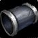

Insidious Bands
Insidious BandsInsidious Bands194 armor, 28 agility, 28 stamina, 58 attack power, 12 hit rating (0.76%)Sockets yellow · Socket bonus 2 agilityDrops from Teron Gorefiend, Black Temple
194 armor, 28 agility, 28 stamina, 58 attack power, 12 hit rating
(0.76%)
Sockets yellow · Socket bonus 2 agility
Drops from Teron Gorefiend, Black Temple
What influencers say
Showing 5 of 10 captured remarks, widest reach first, with every view
represented
SimonizeShow
SimonizeShow · 4:46
64k views
Puts it on rogue
He calls Insidious Bands a great Black Temple wrist and a substantial
upgrade over the phase two Vambraces of Ending, with the badge-reward
alternative unremarkable by comparison.
Joardee
Joardee · 108:01
23k views
Puts it on Beast Mastery Hunter, not rogue
He treats Insidious Bands as a hunter-versus-rogue contest and would
give them to the BM hunter, since BM hunters need hit while
transitioning and have to concede hitless pieces like Shadowmaster's
Boots.
Veramos Gaming
Veramos Gaming · 1:28
18k views
Puts it on Survival Hunter
He lists Insidious Bands, gemmed with a delicate crimson spinel, as the
wrist piece in his absolute best-in-slot survival hunter set.
Slesh
Slesh · 5:56
8k views
Puts it on rogue
He treats the crafted Swift Strike Bracers as a stopgap until Insidious
Bands drop, saying the Bands are a lot better thanks to their built-in
hit rating and yellow socket.
Jambrosay
Jambrosay · 6:57
6k views
Puts it on Beast Mastery Hunter
He calls Insidious Bands an immediate wrist upgrade for BM hunters, says
the crafted bracers do not beat them and are only about one DPS apart at
entry, and that the leatherworking Swift Strike Bracers are an outright
loss, falling more than twenty DPS behind in full tier six.
Showing all 10 spec cards.
No specs are selected, so no cards are showing. Use Show every spec to bring all of them back.
Combat Rogue
Prioritynot yet decided
Constraints
Special-attack hit cap9%special
attacks
Precision-5%
Improved Faerie Fire-3%assumed
Gear needs1%
Entry set13.1%clear
by 12%
Tier set, Tier 6 shoulder and chest and
hands and legs13.3%clear by 12.2%
Dual-wields: white swings miss until 28%, which nothing in this patch
reaches, so hit past the cap still buys accuracy.
White swings stop critting at 50.5%, measured at the special-attack hit
cap.
Nothing rostered reaches it this phase, so crit stays linear all tier.
No haste threshold to protect.
Delta
Insidious BandsInsidious
Bands194 armor, 28 agility, 28
stamina, 58 attack power, 12 hit rating (0.76%)Sockets yellow · Socket bonus 2
agilityDrops from Teron Gorefiend,
Black Temple in Combat
Rogue terms EPV
173.56
| Stat | Over best Phase 3 off-piece, Hyjal Summit Deadly CuffsDeadly Cuffs194 armor, 28 stamina, 58 attack power, 12 hit rating (0.76%), 28 crit rating (1.27%)Sockets yellow · Socket bonus 3 staminaDrops from Rage Winterchill, Mount Hyjal EPV 160.96 | Over next best off-piece, Leatherworking Swiftstrike BracersSwiftstrike Bracers194 armor, 20 agility, 34 stamina, 50 attack power, 27 haste ratingCrafted, Leatherworking EPV 156.03 | Over best pre-phase off-piece, Tempest Keep Vambraces of EndingVambraces of Ending177 armor, 24 agility, 24 stamina, 52 attack powerSockets blue · Socket bonus 4 attack power, 4 ranged attack powerDrops from High Astromancer Solarian, Tempest Keep EPV 129.44 | Over next best off-piece, Ogri'la Shard-bound BracersShard-bound Bracers146 armor, 20 agility, 18 stamina, 42 attack powerSockets blue · Socket bonus 4 attack power, 4 ranged attack powerReputation reward, Ogri'la, Exalted EPV 110.60 | ||||
|---|---|---|---|---|---|---|---|---|
| Change | Converted | Change | Converted | Change | Converted | Change | Converted | |
| armor | 0 | 0 | +17 | +48 | ||||
| agility | +28 | +28 attack power · +0.70% melee crit | +8 | +8 attack power · +0.20% melee crit | +4 | +4 attack power · +0.10% melee crit | +8 | +8 attack power · +0.20% melee crit |
| stamina | 0 | -6 | +4 | +10 | ||||
| attack power | 0 | +8 | +6 | +16 | ||||
| hit | 0 | +12 | +0.76% | +12 | +0.76% | +12 | +0.76% | |
| crit | -28 | -1.27% | 0 | 0 | 0 | |||
| haste rating | 0 | -27 | -27 haste rating | 0 | 0 | |||
| Stat Highlights (Total Change) | +28 attack power -0.57% melee crit | +16 attack power +0.20% melee crit +0.76% melee and ranged hit -27 haste rating | +10 attack power +0.10% melee crit +0.76% melee and ranged hit | +24 attack power +0.20% melee crit +0.76% melee and ranged hit | ||||
No Tier 6 and no Tier 5 is ranked for this spec in this slot, so that
comparison is not shown. A weapon the workbook does not rank cannot be
compared against, and a spec with no captured gear set has nothing
recorded to carry in.
Arms Warrior
Prioritynot yet decided
Constraints
Special-attack hit cap9%special
attacks
Improved Faerie Fire-3%assumed
Gear needs6%
The Precision talent sits in the Fury tree, which this build does not
reach.
Entry set5.1%short
by 0.8%
Tier set, Tier 6 head and shoulder and
chest and hands3.9%short by 2.1%
Closed by 4 hit gems against 8 sockets in the set.
Onslaught Gauntlets 87.78 EPV against Grips of Silent Justice 101.88
from Shade of Akama, and the entry set holds two Tier 5 pieces, at the
head and the chest, so the head token costs the Destroyer two-piece and
not the four-piece; this set holds four Tier 6 pieces, at the head, the
shoulder, the chest and the hands.
White swings stop critting at 69.5%, measured at the special-attack hit
cap.
Nothing rostered reaches it this phase, so crit stays linear all tier.
No haste threshold to protect.
Delta
Insidious BandsInsidious
Bands194 armor, 28 agility, 28
stamina, 58 attack power, 12 hit rating (0.76%)Sockets yellow · Socket bonus 2
agilityDrops from Teron Gorefiend,
Black Temple in Arms
Warrior terms EPV
63.48
| Stat | Over best Phase 3 off-piece, Hyjal Summit Deadly CuffsDeadly Cuffs194 armor, 28 stamina, 58 attack power, 12 hit rating (0.76%), 28 crit rating (1.27%)Sockets yellow · Socket bonus 3 staminaDrops from Rage Winterchill, Mount Hyjal EPV 70.28 | Over best pre-phase off-piece, Serpentshrine Cavern Bracers of EradicationBracers of Eradication703 armor, 25 strength, 12 stamina, 17 hit rating (1.08%), 24 crit rating (1.09%)Sockets blue · Socket bonus 2 strengthDrops from The Lurker Below, Serpentshrine Cavern EPV 68.64 | Over next best off-piece, Hyjal Summit Furious ShacklesFurious Shackles772 armor, 35 strength, 28 stamina, 19 crit rating (0.86%)Sockets yellow · Socket bonus 3 staminaDrops from Rage Winterchill, Mount Hyjal EPV 62.48 | Over next best off-piece, Gruul's Lair Bladespire WarbandsBladespire Warbands687 armor, 20 strength, 16 stamina, 24 crit rating (1.09%)Sockets blue, red · Socket bonus 3 strengthDrops from High King Maulgar, Gruul's Lair EPV 62.08 | ||||
|---|---|---|---|---|---|---|---|---|
| Change | Converted | Change | Converted | Change | Converted | Change | Converted | |
| armor | 0 | -509 | -578 | -493 | ||||
| strength | 0 | -25 | -50 attack power | -35 | -70 attack power | -20 | -40 attack power | |
| agility | +28 | 0 attack power · +0.85% melee crit | +28 | 0 attack power · +0.85% melee crit | +28 | 0 attack power · +0.85% melee crit | +28 | 0 attack power · +0.85% melee crit |
| stamina | 0 | +16 | 0 | +12 | ||||
| attack power | 0 | +58 | +58 | +58 | ||||
| hit | 0 | -5 | -0.32% | +12 | +0.76% | +12 | +0.76% | |
| crit | -28 | -1.27% | -24 | -1.09% | -19 | -0.86% | -24 | -1.09% |
| Stat Highlights (Total Change) | -0.42% melee crit | +8 attack power -0.24% melee crit -0.32% melee and ranged hit | -12 attack power -0.01% melee crit +0.76% melee and ranged hit | +18 attack power -0.24% melee crit +0.76% melee and ranged hit | ||||
No Tier 6 and no Tier 5 is ranked for this spec in this slot, so that
comparison is not shown. A weapon the workbook does not rank cannot be
compared against, and a spec with no captured gear set has nothing
recorded to carry in.
Fury Warrior
Prioritynot yet decided
Constraints
Special-attack hit cap9%special
attacks
Improved Faerie Fire-3%assumed
Gear needs6%
The Precision talent is reachable in the Fury tree and this raid's build
does not take it.
Entry set8.8%clear
by 2.8%
Tier set, Tier 6 shoulder and
chest7.7%clear by 1.7%
Dual-wields: white swings miss until 28%, which nothing in this patch
reaches, so hit past the cap still buys accuracy.
White swings stop critting at 50.5%, measured at the special-attack hit
cap.
Nothing rostered reaches it this phase, so crit stays linear all tier.
No haste threshold to protect.
Delta
Insidious BandsInsidious
Bands194 armor, 28 agility, 28
stamina, 58 attack power, 12 hit rating (0.76%)Sockets yellow · Socket bonus 2
agilityDrops from Teron Gorefiend,
Black Temple in Fury
Warrior terms EPV
64.41
| Stat | Over best Phase 3 off-piece, Hyjal Summit Deadly CuffsDeadly Cuffs194 armor, 28 stamina, 58 attack power, 12 hit rating (0.76%), 28 crit rating (1.27%)Sockets yellow · Socket bonus 3 staminaDrops from Rage Winterchill, Mount Hyjal EPV 72.25 | Over next best off-piece, Leatherworking Bindings of Lightning ReflexesBindings of Lightning Reflexes432 armor, 21 agility, 15 stamina, 16 intellect, 56 attack power, 27 haste ratingCrafted, Leatherworking EPV 71.51 | Over best pre-phase off-piece, Serpentshrine Cavern Bracers of EradicationBracers of Eradication703 armor, 25 strength, 12 stamina, 17 hit rating (1.08%), 24 crit rating (1.09%)Sockets blue · Socket bonus 2 strengthDrops from The Lurker Below, Serpentshrine Cavern EPV 69.56 | Over next best off-piece, Leatherworking Swiftstrike BracersSwiftstrike Bracers194 armor, 20 agility, 34 stamina, 50 attack power, 27 haste ratingCrafted, Leatherworking EPV 68.10 | ||||
|---|---|---|---|---|---|---|---|---|
| Change | Converted | Change | Converted | Change | Converted | Change | Converted | |
| armor | 0 | -238 | -509 | 0 | ||||
| strength | 0 | 0 | -25 | -50 attack power | 0 | |||
| agility | +28 | 0 attack power · +0.85% melee crit | +7 | 0 attack power · +0.21% melee crit | +28 | 0 attack power · +0.85% melee crit | +8 | 0 attack power · +0.24% melee crit |
| stamina | 0 | +13 | +16 | -6 | ||||
| intellect | 0 | -16 | 0 | 0 | ||||
| attack power | 0 | +2 | +58 | +8 | ||||
| hit | 0 | +12 | +0.76% | -5 | -0.32% | +12 | +0.76% | |
| crit | -28 | -1.27% | 0 | -24 | -1.09% | 0 | ||
| haste rating | 0 | -27 | -27 haste rating | 0 | -27 | -27 haste rating | ||
| Stat Highlights (Total Change) | -0.42% melee crit | +2 attack power +0.21% melee crit +0.76% melee and ranged hit -27 haste rating | +8 attack power -0.24% melee crit -0.32% melee and ranged hit | +8 attack power +0.24% melee crit +0.76% melee and ranged hit -27 haste rating | ||||
No Tier 6 and no Tier 5 is ranked for this spec in this slot, so that
comparison is not shown. A weapon the workbook does not rank cannot be
compared against, and a spec with no captured gear set has nothing
recorded to carry in.
Protection Warrior
Prioritynot yet decided
Constraints
Special-attack hit cap9%threat
floor
Improved Faerie Fire-3%assumed
Gear needs6%
The Precision talent sits in the Fury tree, which this build does not
reach.
Entry set6.7%clear
by 0.7%
Tier set, Tier 6 shoulder6.7%clear
by 0.7%
The constraint that decides this spec's gear is crit immunity, which it
reaches at 490 defense skill, or 284 defense rating from gear.
That rating figure assumes Anticipation at 5 ranks, which supplies 20
defense skill. Without it the requirement is 332 rating.
Pushing crushing blows off the attack table needs 102.4% of miss, dodge,
parry and block on the character sheet.
White swings stop critting at 69.5%, measured at the special-attack hit
cap.
Nothing rostered reaches it this phase, so crit stays linear all tier.
No haste threshold to protect.
Delta
Insidious BandsInsidious
Bands194 armor, 28 agility, 28
stamina, 58 attack power, 12 hit rating (0.76%)Sockets yellow · Socket bonus 2
agilityDrops from Teron Gorefiend,
Black Temple in
Protection Warrior terms EPV 88.81
| Stat | Over best Phase 3 off-piece, Hyjal Summit Furious ShacklesFurious Shackles772 armor, 35 strength, 28 stamina, 19 crit rating (0.86%)Sockets yellow · Socket bonus 3 staminaDrops from Rage Winterchill, Mount Hyjal EPV 102.30 | Over next best off-piece, Blacksmithing Swiftsteel BracersSwiftsteel Bracers772 armor, 35 strength, 32 stamina, 27 haste ratingCrafted, Blacksmithing EPV 98.82 | Over best pre-phase off-piece, Serpentshrine Cavern Bracers of EradicationBracers of Eradication703 armor, 25 strength, 12 stamina, 17 hit rating (1.08%), 24 crit rating (1.09%)Sockets blue · Socket bonus 2 strengthDrops from The Lurker Below, Serpentshrine Cavern EPV 98.16 | Over next best off-piece, Karazhan Vambraces of CourageVambraces of Courage634 armor, 33 stamina, 15 defense rating, 33 block valueSockets yellow · Socket bonus 2 dodge ratingDrops from Attumen the Huntsman, Karazhan EPV 97.99 | ||||
|---|---|---|---|---|---|---|---|---|
| Change | Converted | Change | Converted | Change | Converted | Change | Converted | |
| armor | -578 | -578 | -509 | -440 | ||||
| strength | -35 | -70 attack power | -35 | -70 attack power | -25 | -50 attack power | 0 | |
| agility | +28 | 0 attack power · +0.85% melee crit | +28 | 0 attack power · +0.85% melee crit | +28 | 0 attack power · +0.85% melee crit | +28 | 0 attack power · +0.85% melee crit |
| stamina | 0 | -4 | -40 health | +16 | +160 health | -5 | -50 health | |
| attack power | +58 | +58 | +58 | +58 | ||||
| hit | +12 | +0.76% | +12 | +0.76% | -5 | -0.32% | +12 | +0.76% |
| crit | -19 | -0.86% | 0 | -24 | -1.09% | 0 | ||
| haste rating | 0 | -27 | -27 haste rating | 0 | 0 | |||
| defense rating | 0 | 0 | 0 | -15 | -6.34 defense skill | |||
| block value | 0 | 0 | 0 | -33 | ||||
| Stat Highlights (Total Change) | No changes in converted stats. | -40 health | +160 health | -50 health -6.34 defense skill | ||||
No Tier 6 and no Tier 5 is ranked for this spec in this slot, so that
comparison is not shown. A weapon the workbook does not rank cannot be
compared against, and a spec with no captured gear set has nothing
recorded to carry in.
Retribution Paladin
Prioritynot yet decided
Constraints
Special-attack hit cap9%special
attacks
Precision-3%
Improved Faerie Fire-3%assumed
Gear needs3%
Entry set3.7%clear
by 0.7%
Tier set, no Tier 6 piece
worn3.7%clear by 0.7%
Lightbringer Gauntlets 56.46 EPV against Gloves of the Searing Grip
65.57, and no Retribution set bonus in either tier is a damage bonus;
this set holds no Tier 6 piece and keeps Gloves of the Searing Grip at
the hands.
White swings stop critting at 69.5%, measured at the special-attack hit
cap.
Nothing rostered reaches it this phase, so crit stays linear all tier.
No haste threshold to protect.
Delta
Insidious BandsInsidious
Bands194 armor, 28 agility, 28
stamina, 58 attack power, 12 hit rating (0.76%)Sockets yellow · Socket bonus 2
agilityDrops from Teron Gorefiend,
Black Temple in
Retribution Paladin terms EPV 45.01
| Stat | Over best Phase 3 off-piece, Leatherworking Bindings of Lightning ReflexesBindings of Lightning Reflexes432 armor, 21 agility, 15 stamina, 16 intellect, 56 attack power, 27 haste ratingCrafted, Leatherworking EPV 50.32 | Over next best off-piece, Leatherworking Swiftstrike BracersSwiftstrike Bracers194 armor, 20 agility, 34 stamina, 50 attack power, 27 haste ratingCrafted, Leatherworking EPV 47.90 | Over next best off-piece, Blacksmithing Swiftsteel BracersSwiftsteel Bracers772 armor, 35 strength, 32 stamina, 27 haste ratingCrafted, Blacksmithing EPV 46.84 | Over best pre-phase off-piece, Serpentshrine Cavern Bracers of EradicationBracers of Eradication703 armor, 25 strength, 12 stamina, 17 hit rating (1.08%), 24 crit rating (1.09%)Sockets blue · Socket bonus 2 strengthDrops from The Lurker Below, Serpentshrine Cavern EPV 45.35 | ||||
|---|---|---|---|---|---|---|---|---|
| Change | Converted | Change | Converted | Change | Converted | Change | Converted | |
| armor | -238 | 0 | -578 | -509 | ||||
| strength | 0 | 0 | -35 | -70 attack power | -25 | -50 attack power | ||
| agility | +7 | 0 attack power · +0.28% melee crit | +8 | 0 attack power · +0.32% melee crit | +28 | 0 attack power · +1.12% melee crit | +28 | 0 attack power · +1.12% melee crit |
| stamina | +13 | -6 | -4 | +16 | ||||
| intellect | -16 | 0 | 0 | 0 | ||||
| attack power | +2 | +8 | +58 | +58 | ||||
| hit | +12 | +0.76% | +12 | +0.76% | +12 | +0.76% | -5 | -0.32% |
| crit | 0 | 0 | 0 | -24 | -1.09% | |||
| haste rating | -27 | -27 haste rating | -27 | -27 haste rating | -27 | -27 haste rating | 0 | |
| Stat Highlights (Total Change) | +2 attack power +0.28% melee crit +0.76% melee and ranged hit -27 haste rating | +8 attack power +0.32% melee crit +0.76% melee and ranged hit -27 haste rating | -12 attack power +1.12% melee crit +0.76% melee and ranged hit -27 haste rating | +8 attack power +0.03% melee crit -0.32% melee and ranged hit | ||||
No Tier 6 and no Tier 5 is ranked for this spec in this slot, so that
comparison is not shown. A weapon the workbook does not rank cannot be
compared against, and a spec with no captured gear set has nothing
recorded to carry in.
Enhancement Shaman
Prioritynot yet decided
Constraints
Special-attack hit cap9%special
attacks
Dual Wield Specialization-6%
Nature's Guidance-3%
Improved Faerie Fire-3%assumed
Gear needs0%
Entry set9.2%clear
by 12.2%
Talent and the assumed raid debuff cover this cap outright, so every
point of hit on an item is surplus.
Tier set, no Tier 6 piece
worn9.2%clear by 12.2%
The published guide states in its own words that neither Tier 6 set
bonus is worth chasing for this spec, and this set holds no Tier 6
piece.
Dual-wields: white swings miss until 28%, which nothing in this patch
reaches, so hit past the cap still buys accuracy.
White swings stop critting at 50.5%, measured at the special-attack hit
cap.
Nothing rostered reaches it this phase, so crit stays linear all tier.
No haste threshold to protect.
Delta
Insidious BandsInsidious
Bands194 armor, 28 agility, 28
stamina, 58 attack power, 12 hit rating (0.76%)Sockets yellow · Socket bonus 2
agilityDrops from Teron Gorefiend,
Black Temple in
Enhancement Shaman terms EPV 133.46
| Stat | Over best Phase 3 off-piece, Leatherworking Bindings of Lightning ReflexesBindings of Lightning Reflexes432 armor, 21 agility, 15 stamina, 16 intellect, 56 attack power, 27 haste ratingCrafted, Leatherworking EPV 137.67 | Over next best off-piece, Hyjal Summit Deadly CuffsDeadly Cuffs194 armor, 28 stamina, 58 attack power, 12 hit rating (0.76%), 28 crit rating (1.27%)Sockets yellow · Socket bonus 3 staminaDrops from Rage Winterchill, Mount Hyjal EPV 134.66 | Over next best off-piece, Leatherworking Swiftstrike BracersSwiftstrike Bracers194 armor, 20 agility, 34 stamina, 50 attack power, 27 haste ratingCrafted, Leatherworking EPV 128.71 | Over best pre-phase off-piece, Serpentshrine Cavern True-Aim Stalker BandsTrue-Aim Stalker Bands394 armor, 18 stamina, 12 intellect, 50 attack power, 24 crit rating (1.09%)Sockets yellow · Socket bonus 3 staminaDrops from Leotheras the Blind, Serpentshrine Cavern EPV 101.64 | ||||
|---|---|---|---|---|---|---|---|---|
| Change | Converted | Change | Converted | Change | Converted | Change | Converted | |
| armor | -238 | 0 | 0 | -200 | ||||
| agility | +7 | 0 attack power · +0.28% melee crit | +28 | 0 attack power · +1.12% melee crit | +8 | 0 attack power · +0.32% melee crit | +28 | 0 attack power · +1.12% melee crit |
| stamina | +13 | 0 | -6 | +10 | ||||
| intellect | -16 | 0 | 0 | -12 | ||||
| attack power | +2 | 0 | +8 | +8 | ||||
| hit | +12 | +0.76% | 0 | +12 | +0.76% | +12 | +0.76% | |
| crit | 0 | -28 | -1.27% | 0 | -24 | -1.09% | ||
| haste rating | -27 | -27 haste rating | 0 | -27 | -27 haste rating | 0 | ||
| Stat Highlights (Total Change) | +2 attack power +0.28% melee crit +0.76% melee and ranged hit -27 haste rating | -0.15% melee crit | +8 attack power +0.32% melee crit +0.76% melee and ranged hit -27 haste rating | +8 attack power +0.03% melee crit +0.76% melee and ranged hit | ||||
No Tier 6 and no Tier 5 is ranked for this spec in this slot, so that
comparison is not shown. A weapon the workbook does not rank cannot be
compared against, and a spec with no captured gear set has nothing
recorded to carry in.
Feral Cat
Prioritynot yet decided
Constraints
Special-attack hit cap9%special
attacks
Improved Faerie Fire-3%assumed
Gear needs6%
No hit talent exists for this spec.
Entry set10.8%clear
by 4.9%
Tier set, Tier 6 shoulder and
legs10.8%clear by 4.8%
The head slot is Wolfshead Helm and the hands slot is Gloves of the
Searing Grip, and neither is a tier piece, so this set takes neither the
head token nor the hands token; it holds two Tier 6 pieces, at the
shoulder and the legs.
White swings stop critting at 69.5%, measured at the special-attack hit
cap.
Nothing rostered reaches it this phase, so crit stays linear all tier.
No haste threshold to protect.
Delta
Insidious BandsInsidious
Bands194 armor, 28 agility, 28
stamina, 58 attack power, 12 hit rating (0.76%)Sockets yellow · Socket bonus 2
agilityDrops from Teron Gorefiend,
Black Temple in Feral Cat
terms EPV 229.40
| Stat | Over best Phase 3 off-piece, Hyjal Summit Deadly CuffsDeadly Cuffs194 armor, 28 stamina, 58 attack power, 12 hit rating (0.76%), 28 crit rating (1.27%)Sockets yellow · Socket bonus 3 staminaDrops from Rage Winterchill, Mount Hyjal EPV 197.76 | Over best pre-phase off-piece, Tempest Keep Vambraces of EndingVambraces of Ending177 armor, 24 agility, 24 stamina, 52 attack powerSockets blue · Socket bonus 4 attack power, 4 ranged attack powerDrops from High Astromancer Solarian, Tempest Keep EPV 171.00 | Over next best off-piece, Leatherworking Swiftstrike BracersSwiftstrike Bracers194 armor, 20 agility, 34 stamina, 50 attack power, 27 haste ratingCrafted, Leatherworking EPV 156.72 | Over next best off-piece,
Karazhan
 Ravager's Wrist-WrapsRavager's Wrist-Wraps159 armorDrops from Rokad the Ravager, Karazhan EPV 155.68 |
||||
|---|---|---|---|---|---|---|---|---|
| Change | Converted | Change | Converted | Change | Converted | Change | Converted | |
| armor | 0 | +17 | 0 | +35 | ||||
| agility | +28 | +28 attack power · +1.12% melee crit | +4 | +4 attack power · +0.16% melee crit | +8 | +8 attack power · +0.32% melee crit | +28 | +28 attack power · +1.12% melee crit |
| stamina | 0 | +4 | -6 | +28 | ||||
| attack power | 0 | +6 | +8 | +58 | ||||
| hit | 0 | +12 | +0.76% | +12 | +0.76% | +12 | +0.76% | |
| crit | -28 | -1.27% | 0 | 0 | 0 | |||
| haste rating | 0 | 0 | -27 | -27 haste rating | 0 | |||
| Stat Highlights (Total Change) | +28 attack power -0.15% melee crit | +10 attack power +0.16% melee crit +0.76% melee and ranged hit | +16 attack power +0.32% melee crit +0.76% melee and ranged hit -27 haste rating | +86 attack power +1.12% melee crit +0.76% melee and ranged hit | ||||
No Tier 6 and no Tier 5 is ranked for this spec in this slot, so that
comparison is not shown. A weapon the workbook does not rank cannot be
compared against, and a spec with no captured gear set has nothing
recorded to carry in.
Feral Bear
Prioritynot yet decided
Constraints
Special-attack hit cap9%threat
floor
Improved Faerie Fire-3%assumed
Gear needs6%
No hit talent exists for this spec.
Entry set3.2%short
by 2.8%
Tier set, Tier 6 head and shoulder and
chest and hands and legs3.7%short
by 2.2%
Closed by 4 hit gems against 5 sockets in the set.
A druid has five tier slots, so the Nordrassil four-piece and the
Thunderheart two-piece need six between them and cannot both be worn;
this set wears five pieces of Thunderheart Harness, which leaves it no
Nordrassil piece.
The constraint that decides this spec's gear is crit immunity, which it
reaches at 415 defense skill, or 154 defense rating from gear.
Survival of the Fittest supplies 3% of that reduction, which is why this
spec's figure is lower than a plate tank's.
This spec cannot hold all four avoidance entries, so it cannot
sustainably push crushing blows off the attack table.
White swings stop critting at 69.5%, measured at the special-attack hit
cap.
Nothing rostered reaches it this phase, so crit stays linear all tier.
No haste threshold to protect.
Delta
Insidious BandsInsidious
Bands194 armor, 28 agility, 28
stamina, 58 attack power, 12 hit rating (0.76%)Sockets yellow · Socket bonus 2
agilityDrops from Teron Gorefiend,
Black Temple in Feral
Bear terms EPV
412.61
| Stat | Over best Phase 3 off-piece, Leatherworking Swiftstrike BracersSwiftstrike Bracers194 armor, 20 agility, 34 stamina, 50 attack power, 27 haste ratingCrafted, Leatherworking EPV 363.97 | Over next best off-piece, Hyjal Summit Deadly CuffsDeadly Cuffs194 armor, 28 stamina, 58 attack power, 12 hit rating (0.76%), 28 crit rating (1.27%)Sockets yellow · Socket bonus 3 staminaDrops from Rage Winterchill, Mount Hyjal EPV 360.38 | Over best pre-phase off-piece, Tempest Keep Vambraces of EndingVambraces of Ending177 armor, 24 agility, 24 stamina, 52 attack powerSockets blue · Socket bonus 4 attack power, 4 ranged attack powerDrops from High Astromancer Solarian, Tempest Keep EPV 339.60 | Over next best off-piece, Shattered Halls Forestheart BracersForestheart Bracers237 armor, 18 strength, 18 agility, 27 stamina, 16 intellect EPV 306.23 | ||||
|---|---|---|---|---|---|---|---|---|
| Change | Converted | Change | Converted | Change | Converted | Change | Converted | |
| armor | 0 | 0 | +17 | -43 | ||||
| strength | 0 | 0 | 0 | -18 | -36 attack power | |||
| agility | +8 | 0 attack power · +0.32% melee crit | +28 | 0 attack power · +1.12% melee crit | +4 | 0 attack power · +0.16% melee crit | +10 | 0 attack power · +0.40% melee crit |
| stamina | -6 | -60 health | 0 | +4 | +40 health | +1 | +10 health | |
| intellect | 0 | 0 | 0 | -16 | ||||
| attack power | +8 | 0 | +6 | +58 | ||||
| hit | +12 | +0.76% | 0 | +12 | +0.76% | +12 | +0.76% | |
| crit | 0 | -28 | -1.27% | 0 | 0 | |||
| haste rating | -27 | -27 haste rating | 0 | 0 | 0 | |||
| Stat Highlights (Total Change) | -60 health | No changes in converted stats. | +40 health | +10 health | ||||
No Tier 6 and no Tier 5 is ranked for this spec in this slot, so that
comparison is not shown. A weapon the workbook does not rank cannot be
compared against, and a spec with no captured gear set has nothing
recorded to carry in.
Beast Mastery Hunter
Prioritynot yet decided
Constraints
Ranged hit cap9%shots
Improved Faerie Fire-3%assumed
Gear needs6%
The Surefooted talent sits in the Survival tree, which this build does
not reach.
Entry set7.7%clear
by 1.7%
Tier set, Tier 6 shoulder and chest and
hands and legs5.8%short by 0.2%
Closed by 1 hit gem against 8 sockets in the set.
No crit cap.
No haste threshold to protect.
Delta
Insidious BandsInsidious
Bands194 armor, 28 agility, 28
stamina, 58 attack power, 12 hit rating (0.76%)Sockets yellow · Socket bonus 2
agilityDrops from Teron Gorefiend,
Black Temple in Beast
Mastery Hunter terms EPV 147.45
| Stat | Over best Phase 3 off-piece, Leatherworking Bindings of Lightning ReflexesBindings of Lightning Reflexes432 armor, 21 agility, 15 stamina, 16 intellect, 56 attack power, 27 haste ratingCrafted, Leatherworking EPV 142.93 | Over next best off-piece, Leatherworking Swiftstrike BracersSwiftstrike Bracers194 armor, 20 agility, 34 stamina, 50 attack power, 27 haste ratingCrafted, Leatherworking EPV 134.88 | Over next best off-piece, Hyjal Summit Deadly CuffsDeadly Cuffs194 armor, 28 stamina, 58 attack power, 12 hit rating (0.76%), 28 crit rating (1.27%)Sockets yellow · Socket bonus 3 staminaDrops from Rage Winterchill, Mount Hyjal EPV 133.45 | Over best pre-phase off-piece, Tempest Keep Vambraces of EndingVambraces of Ending177 armor, 24 agility, 24 stamina, 52 attack powerSockets blue · Socket bonus 4 attack power, 4 ranged attack powerDrops from High Astromancer Solarian, Tempest Keep EPV 116.25 | ||||
|---|---|---|---|---|---|---|---|---|
| Change | Converted | Change | Converted | Change | Converted | Change | Converted | |
| armor | -238 | 0 | 0 | +17 | ||||
| agility | +7 | +7 attack power · +7 ranged attack power · +0.17% melee crit | +8 | +8 attack power · +8 ranged attack power · +0.20% melee crit | +28 | +28 attack power · +28 ranged attack power · +0.70% melee crit | +4 | +4 attack power · +4 ranged attack power · +0.10% melee crit |
| stamina | +13 | -6 | 0 | +4 | ||||
| intellect | -16 | 0 | 0 | 0 | ||||
| attack power | +2 | +8 | 0 | +6 | ||||
| hit | +12 | +0.76% | +12 | +0.76% | 0 | +12 | +0.76% | |
| crit | 0 | 0 | -28 | -1.27% | 0 | |||
| haste rating | -27 | -27 haste rating | -27 | -27 haste rating | 0 | 0 | ||
| Stat Highlights (Total Change) | +9 attack power +7 ranged attack power +0.17% melee crit +0.76% melee and ranged hit -27 haste rating | +16 attack power +8 ranged attack power +0.20% melee crit +0.76% melee and ranged hit -27 haste rating | +28 attack power +28 ranged attack power -0.57% melee crit | +10 attack power +4 ranged attack power +0.10% melee crit +0.76% melee and ranged hit | ||||
No Tier 6 and no Tier 5 is ranked for this spec in this slot, so that
comparison is not shown. A weapon the workbook does not rank cannot be
compared against, and a spec with no captured gear set has nothing
recorded to carry in.
Survival Hunter
Prioritynot yet decided
Constraints
Ranged hit cap9%shots
Surefooted-3%
Improved Faerie Fire-3%assumed
Gear needs3%
Entry set5.5%clear
by 2.5%
Tier set, Tier 6 head and shoulder and
chest and hands2.3%short by 0.6%
Closed by 1 hit gem against 7 sockets in the set.
No crit cap.
No haste threshold to protect.
Delta
Insidious BandsInsidious
Bands194 armor, 28 agility, 28
stamina, 58 attack power, 12 hit rating (0.76%)Sockets yellow · Socket bonus 2
agilityDrops from Teron Gorefiend,
Black Temple in Survival
Hunter terms EPV
238.80
| Stat | Over best Phase 3 off-piece, Leatherworking Bindings of Lightning ReflexesBindings of Lightning Reflexes432 armor, 21 agility, 15 stamina, 16 intellect, 56 attack power, 27 haste ratingCrafted, Leatherworking EPV 220.09 | Over next best off-piece, Leatherworking Swiftstrike BracersSwiftstrike Bracers194 armor, 20 agility, 34 stamina, 50 attack power, 27 haste ratingCrafted, Leatherworking EPV 208.88 | Over next best off-piece, Hyjal Summit Bracers of the PathfinderBracers of the Pathfinder432 armor, 25 agility, 24 stamina, 24 intellect, 48 attack powerSockets blue · Socket bonus 2 crit ratingDrops from Rage Winterchill, Mount Hyjal EPV 190.08 | Over best pre-phase off-piece, Tempest Keep Vambraces of EndingVambraces of Ending177 armor, 24 agility, 24 stamina, 52 attack powerSockets blue · Socket bonus 4 attack power, 4 ranged attack powerDrops from High Astromancer Solarian, Tempest Keep EPV 188.87 | ||||
|---|---|---|---|---|---|---|---|---|
| Change | Converted | Change | Converted | Change | Converted | Change | Converted | |
| armor | -238 | 0 | -238 | +17 | ||||
| agility | +7 | +7 attack power · +7 ranged attack power · +0.17% melee crit | +8 | +8 attack power · +8 ranged attack power · +0.20% melee crit | +3 | +3 attack power · +3 ranged attack power · +0.07% melee crit | +4 | +4 attack power · +4 ranged attack power · +0.10% melee crit |
| stamina | +13 | -6 | +4 | +4 | ||||
| intellect | -16 | 0 | -24 | 0 | ||||
| attack power | +2 | +8 | +10 | +6 | ||||
| hit | +12 | +0.76% | +12 | +0.76% | +12 | +0.76% | +12 | +0.76% |
| haste rating | -27 | -27 haste rating | -27 | -27 haste rating | 0 | 0 | ||
| Stat Highlights (Total Change) | +9 attack power +7 ranged attack power +0.17% melee crit +0.76% melee and ranged hit -27 haste rating | +16 attack power +8 ranged attack power +0.20% melee crit +0.76% melee and ranged hit -27 haste rating | +13 attack power +3 ranged attack power +0.07% melee crit +0.76% melee and ranged hit | +10 attack power +4 ranged attack power +0.10% melee crit +0.76% melee and ranged hit | ||||
No Tier 6 and no Tier 5 is ranked for this spec in this slot, so that
comparison is not shown. A weapon the workbook does not rank cannot be
compared against, and a spec with no captured gear set has nothing
recorded to carry in.